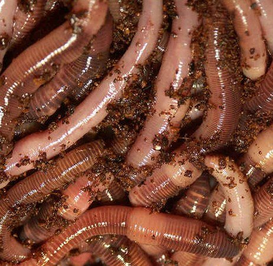
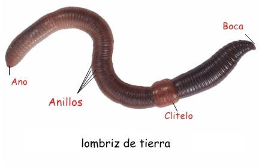
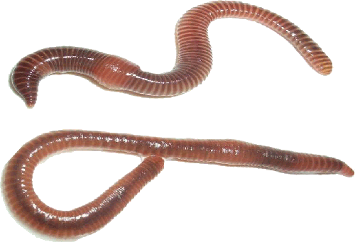
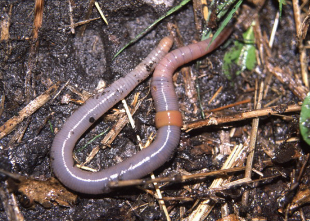
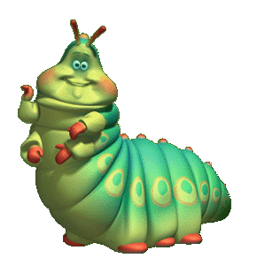

Anélidos
El filo Annelida, Anélidos, son un grupo de invertebrados conocidos popularmente como gusanos. Este término no tiene ninguna validez taxonómica puesto que hay gusanos en diferentes filos de animales que poco tienen que ver entre ellos, como por ejemplo el filo de los Platelmintos o el de los Nematodos. Su nombre procede de la característica más llamativa de su cuerpo, los anillos. Cada uno de estos anillos es en realidad un metámero, un segmento del cuerpo que se repite a lo largo de todo el organismo y que contiene todos los órganos mesodérmicos.


Los anélidos se pueden reproducir de manera asexual y de forma sexual. Existen algunas especies que tienen sólo uno de los dos tipos de reproducción mientras que otras las combinan. En el caso de la reproducción asexual hay algunas especies que lo pueden hacer por gemación, generando un nuevo individuo unido al otro, mientras que otras especies se reproducen por fragmentación, es decir dividiéndose en dos o más nuevos individuos.
Aunque siempre se ha creído que los anélidos eran animales en los que cada individuo tenía un sexo, se ha descubierto que muchos de ellos son hermafroditas. En la mayoría de especies acuáticas, un individuo secreta esperma en el medio acuático y el otro libera los óvulos, en definitiva, se produce una fecundación externa. Estos huevos fertilizados viven como plancton hasta que descienden al fondo marino y sufren una metamorfosis para convertirse en adultos en miniatura. Aunque este es el ciclo de vida más común, existen muchas especies aún desconocidas en zoología. En las especies terrestres, como la lombriz de tierra, la fecundación es interna.
Existen multitud de especies por lo que la alimentación es variada en función de los hábitos y costumbres del animal, los parásitos como la sanguijuela se alimenta de la sangre de sus huéspedes, existe un grupo de anélidos acuático cuya fuente principal de alimentación es el plactón, otros como los terrestres se alimentan de los nutrientes que absorben tras ingerir la tierra.

El filo de los Anélidos se dividen en diversas clases, cada una con sus características propias. Poliquetos y Clitelados son los dos grandes grupos, no obstante existen otros que, aunque con algo más de polémica, también se incluyen en los anélidos, entre los animales invertebrados más conocidos destacan: las lombrices de tierra; sanguijuelas; gusanos árbol de Navidad, denominación que recibe por sus bellos coloridos y las estructuras morfológicas presentes en estas especies, son de vida marina y se asocian con corales.
La clase Poliquetos son el grupo de anélidos más numeroso con más de 10000 especies descritas. La mayoría de ellos son marinos y una de sus características más llamativas es que en cada segmento incluyen dos parapodios con múltiples quetas, lo que da nombre a esta clase. La mayoría de ellos son carnívoros y viven en fondos arenosos, mientras que otros se alimentan de ciertos sedimentos, un ejemplo tipo es el ya mencionado con anterioridad, el gusano árbol de navidad, Spirobranchus giganteus.
La clase Clitelados son fácilmente reconocibles por su clitelo, una especie de collar que tiene una finalidad reproductiva y que todos ellos presentan en partes de su ciclo vital. En esta clase se distinguen dos sub-clases:
– Oligoquetos: La mayoría son animales terrestres, entre ellos tenemos por ejemplo a la lombriz de tierra. No presentan parapodios pero sí tienen algunas quetas, aunque más pequeñas y escasas.
– Hirudíneos: Se conocen popularmente como sanguijuelas y la mayoría vive en entornos de agua salada. Son depredadores de invertebrados menores que ellos, aunque algunas especies se alimentan de la sangre de los vertebrados.
